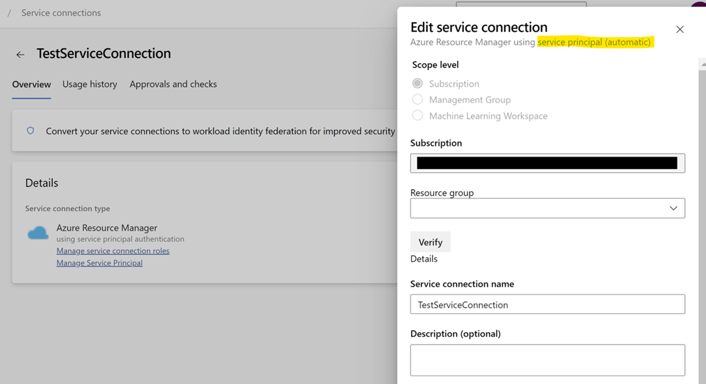
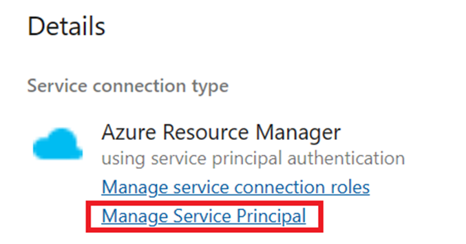
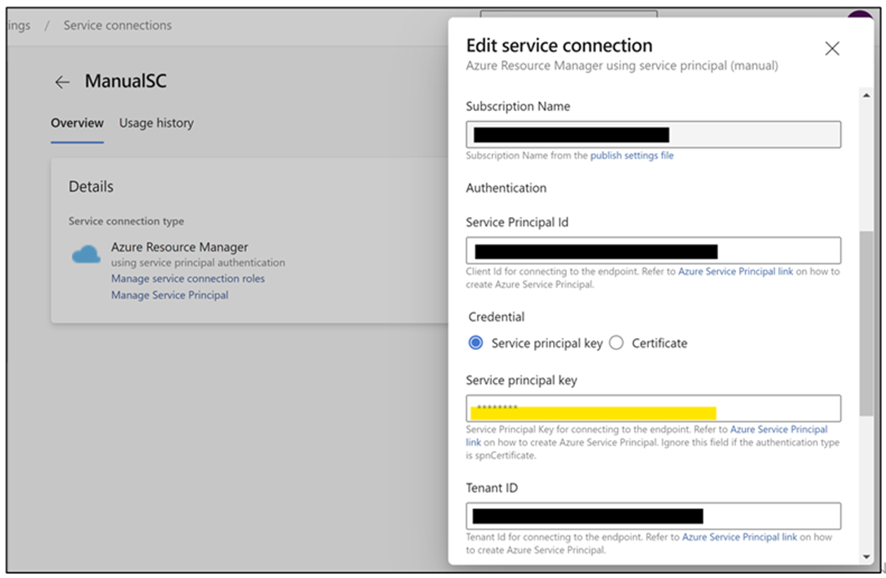

こんにちは、Japan Developer Support Core チームです🐶
今回は、Azure DevOps Service Connection についてのお話です。
Azure DevOps での CI/CD パイプラインは、外部サービスとの連携が不可欠です。Service Connection は、これらの外部サービスへのアクセスポイントとして中心的な役割を果たしており、その期限切れはパイプラインの実行に大きな支障をきたす可能性があります。
本記事では、Azure Resource Manager タイプの Service Connection (以降 Service Connection) の期限切れに迅速かつ正確に対処するためのベスト プラクティスをご紹介します。
Service Connection の重要性と期限切れのリスク
Azure DevOps のパイプラインは、Microsoft Entra ID の機能であるアプリの登録を通じて作成される Service Principal や Managed Identity、Workload Identity Federation を利用して Azure リソースへのアクセスを実現しています。
Service Principal を利用した Service Connection の作成方法には、automatic と manual の二つの方法がありますが、いずれの方法を用いた場合でも、有効期限が切れた際には以下のようなエラー メッセージが表示されることがあります。
1 | AADSTS7000222: The provided client secret keys for app ‘***’ are expired |
1 | Secret has expired. Convert your service connections to workload identity federation for improved security and simplified maintenance. |
これらのエラーメッセージは、Service Connection に紐づく Service Principal のクライアント シークレットの更新が必要であることを示しています。
Service Connection の更新手順
automatic と manual で更新手順が異なります。
まず、”Service principal (automatic)” の場合は以下の手順です。
- Azure DevOps にログインし、対象のプロジェクトを選択します。
- プロジェクト設定に移動し、Service Connections を選択します。
- 期限切れの Service Connection を見つけ、[Edit] をクリックします。
Service Connection が “Service principal (automatic)” で作成されたものかどうかは、Service Connection の編集画面を開いた際、下図の黄色くマーカーされた箇所に表示されます。
 - [Save] ボタンを押下するのみでシークレットが更新され、Service Connection の有効期限が自動的に 3 カ月延長されます。
- Azure DevOps に戻り、Service Connection を検証します。
次に、”Service principal (manual)” の場合は以下のとおりです。
- Azure DevOps にログインし、対象のプロジェクトを選択します。
- プロジェクト設定に移動し、Service Connections を選択します。
- 期限切れの Service Connection を見つけ、[Manage Service Principal] をクリックします。Azure ポータル画面が表示されます。
 - Service Connection が利用している Service Principal のページにて、左側のメニューより [証明書とシークレット] を選択します。
- 新しいクライアント シークレットを作成します。クライアント シークレットの作成手順は、ドキュメント 内 “クライアント シークレットの追加” セクションを参照ください。
- 追加したクライアント シークレット行の “値” 欄右横の “クリップ ボードにコピー” マークをクリックします。※この内容は、この画面でしか表示されませんので、必要に応じてテキスト エディタなどを利用して保存を行ってください。
- 手順 3 の Azure DevOps の Service Connection の画面に戻ります。
- Service Connection ページにて、右上の [Edit] をクリックします。
- [Edit service connection] ダイアログにて [Service principal key] 欄に、手順 6 にて取得したクライアント シークレットの値を貼り付けます。 ※ 証明書の更新時間があるため、このまま 1 分ほど待機します。
- [Verify and save] ボタンを押下し設定を保存します。

なお、期限切れ前に更新する場合も同様の手順です。
補足として Docker Registry タイプの Service Connection において [Registry type: Azure Container Registry] を選択している場合には “Service principal (manual)” の更新手順と同様に [Save] ボタンを押下するのみでシークレットが更新されます。
Service Connection の更新に必要な権限
Service Connection を更新する際には、特定の権限が必要です。以下の権限を確認し、必要に応じて付与してください。
- Azure DevOps: 対象の Service Connection における “Administrator” ロールが必要です。Service Connection の作成者は自動でこのロールが付与されます。
- Microsoft Entra ID: Service Principal を更新する権限として、Service Principal の所有者、もしくは “アプリケーション管理者” ロールが必要です。Service Connection を作成したユーザーは Service Principal の所有者となるため、特に制限がなければ既定で更新可能です。
- Azure サブスクリプション: ロールを付与する権限が必要です。具体的には Microsoft.Authorization/roleAssignments/write 権限が必要となり、”所有者” または “ユーザー アクセス管理者” ロールが必要です。もし、対象の Service Connection が、リソース グループを対象としている場合は、リソース グループに対する権限で操作可能です。
新たな Service Connection の作成
クライアント シークレットの有効期限を管理する必要をなくすために、以下の方法で新たな Service Connection を作成することをご検討ください。
- 方法 1: マネージド ID を使用して認証可能な Service Connection を作成します。
- 方法 2: Workload Identity Federation を使用して認証可能な Service Connection を作成します。
これらの方法により、セキュリティを強化し、メンテナンスを簡素化することができます。
詳細については以下のブログをご参照ください。
Azure DevOps Service Connection と Workload Identity Federation について | Japan Developer Support Core Team Blog
まとめ
Service Connection の管理は、Azure DevOps の運用において非常に重要です。期限切れによる中断を避けるためにも、定期的な監視と更新が必要となります。このガイドが、Service Connection のスムーズな管理に役立つことを願っています。
定期的な更新だけでなく、Workload Identity Federation やマネージド ID を利用した新しい Service Connection の作成を検討することで、より安全で効率的な DevOps 環境を実現できますので、あわせてご検討ください。
本ブログの内容は弊社の公式見解として保証されるものではなく、開発・運用時の参考情報としてご活用いただくことを目的としています。もし公式な見解が必要な場合は、弊社ドキュメント (https://learn.microsoft.com や https://support.microsoft.com) をご参照いただくか、もしくは私共サポートまでお問い合わせください。